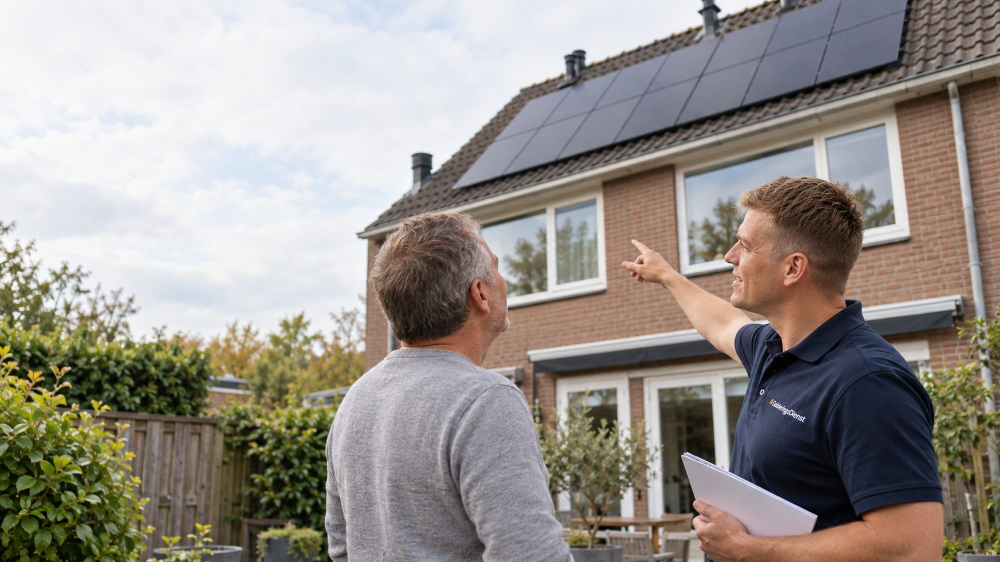
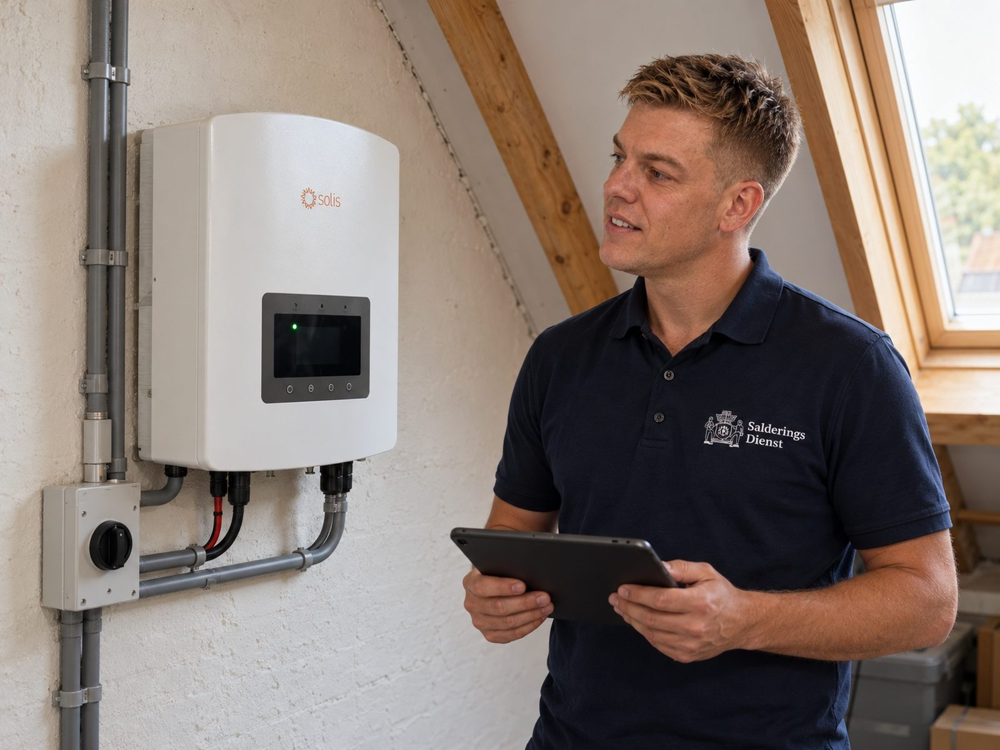

Zonnepanelen na 2027: eerst uw verbruik, dan pas het dak.
Na 1 januari 2027 is zonnestroom die u zelf gebruikt veel meer waard dan stroom die u teruglevert. Een vol dak is daarom niet vanzelf het beste plan. Wij rekenen eerst uw verbruik overdag en uw dak door, en adviseren dan een maat die bij uw woning past. Ook als u al panelen heeft.
- Advies kosteloos en vrijblijvend
- Legplan en opbrengst vooraf berekend
- Installatie door gecertificeerde partners

Wat wij doorrekenen voordat er één paneel ligt.
Een legplan begint niet bij het dak, maar bij hoe u stroom gebruikt. Vier dingen bepalen samen welke maat loont.
-
Uw verbruik overdag
Wat u gebruikt terwijl de zon schijnt
Stroom die u direct zelf gebruikt is het volle tarief waard. Wie thuiswerkt, overdag kookt of de wasmachine op de zon laat draaien, heeft meer aan panelen dan wie pas 's avonds thuiskomt.
-
Uw dak
Richting, helling en schaduw
Een dak op het zuiden levert het meest, maar oost en west geven een vlakkere opbrengst over de dag, wat na 2027 juist gunstig kan zijn. Schaduw van een schoorsteen of boom rekenen wij per paneel mee.
-
Teruglevering na 2027
Wat het overschot nog oplevert
Elk paneel boven uw eigen verbruik levert vooral terug, tegen een vergoeding min terugleverkosten. Daarom kan een kleiner systeem per euro beter renderen dan een vol dak.
-
Uw plannen
Batterij, warmtepomp of auto
Komt er een warmtepomp, een elektrische auto of een thuisbatterij, dan verandert uw verbruik. Dan rekenen wij met het verbruik dat u verwacht, zodat het legplan niet na twee jaar te klein of te groot blijkt.
De uitkomst van die doorrekening, in panelen en in euro's, krijgt u in het adviesgesprek. Op de website tonen wij geen bedragen; die hangen te veel af van uw contract en uw verbruik per uur.

Wat u krijgt.
Een plan dat klopt met uw verbruik, en de uitvoering als u dat wilt.
U ziet vooraf waar de panelen komen, wat ze per jaar opwekken en welk deel daarvan u zelf gebruikt. Geen schatting op basis van het dak alleen, maar een som met uw eigen verbruik erin.
De maat van het systeem en het type omvormer volgen uit de doorrekening. Wilt u later een batterij, dan kiezen wij nu al een omvormer die dat aankan.
Kiest u voor panelen, dan regelen wij levering en montage door gecertificeerde installatiepartners. Uw adviseur blijft uw vaste aanspreekpunt tot en met de oplevering.
Panelen, een thuisbatterij en slimme sturing zijn één geheel. Wij rekenen ze samen door, zodat u niet drie losse offertes krijgt die elkaar tegenspreken.
Al panelen? Haal er meer uit zonder bij te leggen.
Voor veel woningen met panelen is de eerste winst na 2027 niet een groter dak, maar meer van de huidige opwek zelf gebruiken. Dat begint met een controle van wat er nu hangt.
Lees wat er in 2027 verandert Laat uw installatie doorrekenen
Soms is ons advies: minder, of niet.
Zonnepanelen blijven ook na 2027 voor veel woningen een goede keuze. Maar niet elke woning, en niet elke maat. Dit zijn situaties waarin wij regelmatig anders adviseren dan de verkoper.
-
Uw verbruik overdag is laag
Bent u overdag meestal weg en gebruikt u 's avonds het meeste, dan levert een groot systeem vooral terug. Een kleiner systeem, eventueel met batterij, past dan beter.
-
Uw dak ligt ongunstig
Veel schaduw, een steile noordhelling of een dak dat binnen een paar jaar vervangen moet worden: dan is wachten of een kleiner plan verstandiger dan vol leggen.
-
U heeft al een vol dak
Levert u nu al veel terug, dan voegen extra panelen weinig toe. Wij kijken dan eerst naar uw eigen verbruik, uw contract en of opslag in uw geval zin heeft.
Ook dan is het gesprek kosteloos, en de doorrekening krijgt u mee op papier.
Wat er in de offerte staat.
Materiaal, montage en instellingen staan gespecificeerd. Achteraf komt er niets bij.
-
Schouw van dak en meterkast
Dakvlak, dakbedekking, schaduw, de route van de kabels en de ruimte in uw meterkast. Zo weet u vooraf waar u aan toe bent.
-
Legplan met opbrengst
Waar elk paneel komt en wat het systeem per jaar opwekt, uitgesplitst naar wat u zelf gebruikt en wat u teruglevert.
-
Panelen, omvormer en montage
Merk, type en vermogen staan bij naam, met de garantievoorwaarden erbij. Montage door een gecertificeerde installatiepartner.
-
Oplevering en instellingen
Controle van de werking, uitleg over de app van de omvormer en de instellingen die passen bij uw contract.
Vragen over zonnepanelen.
Voor de meeste woningen wel, maar anders dan voorheen. De winst zit na 2027 in de stroom die u zelf gebruikt terwijl de zon schijnt; teruglevering levert veel minder op. Daarom tellen uw verbruik overdag en de maat van het systeem zwaarder dan vroeger. Wat het in uw geval oplevert, rekenen wij in het adviesgesprek door.
Dat volgt uit uw verbruik, vooral overdag, en uit uw dak. Een vol dak is niet vanzelf beter: elk paneel boven uw eigen verbruik levert vooral terug. Het legplan in de offerte noemt het aantal en de opbrengst voor uw woning.
Op de levering en installatie van zonnepanelen bij een woning geldt het nultarief, inclusief wat direct nodig is om de panelen te laten werken. Een thuisbatterij valt daar niet onder; daar betaalt u het gewone tarief over. In de offerte staat het per onderdeel.
Eerst de goedkope stappen: wasmachine, vaatwasser en het laden van een auto naar de middaguren, en uw contract nakijken op terugleververgoeding en terugleverkosten. Daarna laten wij zien of een batterij of sturing in uw situatie iets toevoegt, en of uitbreiden nog zin heeft.
Meestal wel, maar niet altijd zonder meerkosten. Of het eenvoudig kan hangt af van uw omvormer en van de ruimte in uw meterkast. Zegt u nu al dat u dat overweegt, dan kiezen wij een omvormer die het aankan.
Na het gesprek ontvangt u de offerte met legplan. Na uw akkoord plant de installatiepartner de schouw en de montage; de doorlooptijd hangt af van de drukte bij de partner en van de levertijd van de materialen. Uw adviseur houdt u daarvan op de hoogte.
Staat uw vraag er niet bij? Bel ons op 06 3936 9781 of lees de gids over het einde van de salderingsregeling.
Nog … dagen tot 1 januari 2027
Weet welke maat bij uw dak en uw verbruik past.
Kosteloos, zonder verplichtingen, en met het legplan op papier.